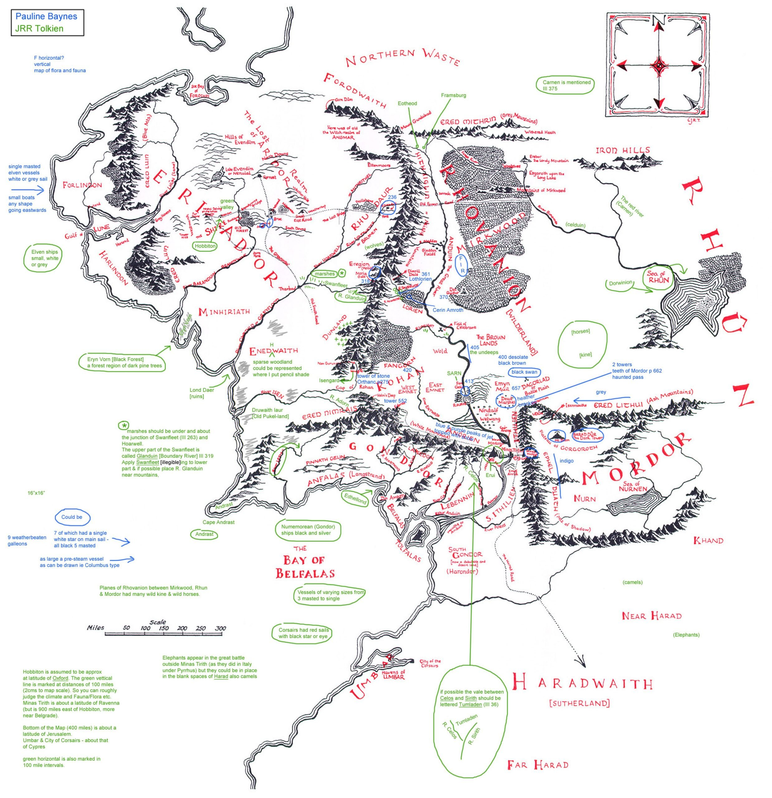

Mehr über Tolkien erfahren
Wichtige Orte in Mittelerde
Mittelerde hat viele berühmte Orte, darunter:
Minas Tirith
Der Einsame Berg
Jahr
Ereignis
3019 D.Z.
Der Ringkrieg endet
3441 Z.Z.
Das letzte Bündnis von Elben und Menschen